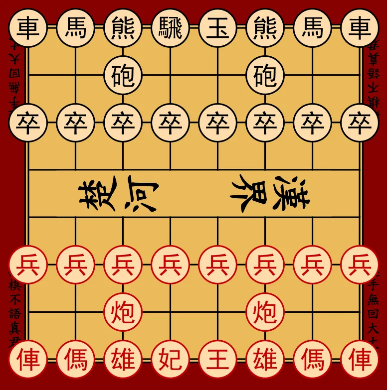

游戏规则
1. 基本概念
- 游戏由两位棋手对弈：南方棋手和北方棋手。
- 南方棋手始终先行。
- 双方随后交替行棋，每次走一步。
- 一步棋是指按照下述规则移动己方的一枚棋子。
- 不存在"虚着"：轮到某方时，该方必须走一步合法的棋，否则对局结束。
- 熊棋的核心棋子是将（帅）：将被吃掉或无法防守时，对局结束。
2. 棋盘与初始布局
2.1 棋盘
- 熊棋在8列8行（8×8）的棋盘上进行。
- 从南方棋手的视角，列从左到右以字母标记：a、b、c、d、e、f、g、h。
- 从南方棋手的视角，行从下到上以数字标记：1、2、3、4、5、6、7、8。
- 南方棋手占据靠近第1行的区域，北方棋手占据靠近第8行的区域。
- "河界"位于第4行与第5行之间。
2.2 棋子
每方拥有以下棋子：
- 将（帅）1枚
- 士（仕）1枚
- 车（俥）2枚
- 熊（雄）2枚
- 马（傌）2枚
- 炮（砲）2枚
- 卒（兵）8枚
2.3 初始布局
双方的初始布局结构相同，呈镜像对称。

2.3.1 南方
- 第1行（a1至h1）：俥、傌、雄、仕、帥、雄、傌、俥。
- 第2行：c2和f2各有一枚炮；其余格为空。
- 第3行：每格一枚兵（a3至h3）。
2.3.2 北方
- 第8行（a8至h8）：車、馬、熊、士、將、熊、馬、車。
- 第7行：c7和f7各有一枚砲；其余格为空。
- 第6行：每格一枚卒（a6至h6）。
2.4 棋子标记规范
按照惯例，每种棋子对应一个汉字和一个拉丁字母缩写， 南方用大写字母，北方用小写字母。 这些规范用于某些记谱系统和程序实现， 但不影响走法规则。
| 棋子类型 | 南方 | 北方 | ||
|---|---|---|---|---|
| 汉字 | 缩写 | 汉字 | 缩写 | |
| 士 | 仕 | A |
士 | a |
| 熊 | 雄 | B |
熊 | b |
| 炮 | 炮 | C |
砲 | c |
| 妃 | 妃 | E |
騛 | e |
| 将 | 帥 | G |
將 | g |
| 马 | 傌 | H |
馬 | h |
| 车 | 俥 | R |
車 | r |
| 兵 | 兵 | S |
卒 | s |
3. 移动与吃子原则
- 轮到某方时，该方移动己方的一枚棋子。
- 移动是指从起始格到达目标格。
- 棋子不能移动到己方棋子占据的格子上。
- 如果目标格有敌方棋子，则将其吃掉并移出棋盘。
- 除非另有说明，棋子不能"跳过"其他棋子：所有中间格必须为空。
- 如果一步棋使己方的将处于被将军状态，则该着法不合法。
3.1 将（帅）
- 将沿水平或垂直方向移动一格。
- 将通过移动到相邻的敌方棋子所在格来吃子。
- 将不受宫的限制：可以自由移动到棋盘上任何合法的格子。
- 将永远不能停在被敌方攻击的格子上。
3.2 士（仕）
- 士沿对角线方向移动一格。
- 士通过移动到对角相邻的敌方棋子所在格来吃子。
- 士不受宫的限制：可以自由移动到棋盘上任何合法的格子。
3.3 车（俥）
- 车沿水平或垂直方向移动任意格数。
- 车不能跳过其他棋子。
- 车通过移动到同一行或同一列上敌方棋子所在格来吃子。
3.4 熊（雄）
- 熊沿对角线方向移动任意格数。
- 熊不能跳过其他棋子。
- 熊通过移动到同一对角线上敌方棋子所在格来吃子。
3.5 马（傌）
- 马的移动分两步进行：
- 从起始格沿直线方向（上、下、左或右）移动一格；
- 然后从该中间位置沿对角线向外移动一格。
- 马不能跳跃：相邻的直线格（马腿）必须为空。如果该格被占据，则该方向的移动被阻挡。
- 目标格必须为空或被敌方棋子占据，后者将被吃掉。
3.6 炮（砲）
- 不吃子时的移动
-
- 炮的移动方式与车相同：沿水平或垂直方向移动任意格数。
- 所有中间格必须为空。
- 吃子
-
- 炮必须与目标敌方棋子在同一行或同一列。
- 炮与目标之间必须恰好有一枚棋子（任何一方的）：该棋子称为"炮架"。
- 炮架与目标之间不能有其他棋子。
- 炮直接移动到目标格并将其吃掉。
炮不能在没有炮架的情况下吃子，也不能在炮与目标之间有多于一枚棋子时吃子。
3.7 妃（騛）
妃结合两种不同的移动方式：车的走法和骑士的走法。
-
每一步，妃可选择以下两种模式之一：
- 车模式
-
- 妃沿水平或垂直方向移动任意格数。
- 不能跳过其他棋子。
- 通过移动到敌方棋子所在格来吃子。
- 骑士模式
-
- 妃走"L"形：沿直线方向移动两格，然后垂直方向移动一格。
- 可以跳过中间的棋子。
- 目标格必须为空或被敌方棋子占据，后者将被吃掉。
- 妃每步只能使用一种模式；不能组合使用。
- 判断受攻击格（特别是将军情况）时，需考虑两种模式可达的所有格子。
注："骑士模式"与3.5节中马的走法不同，区别在于骑士模式可以跳过一枚棋子。
3.8 兵（卒）
双方的兵朝相反方向前进：
- 南方的兵向北前进（行数递增：从第3行向第8行）。
- 北方的卒向南前进（行数递减：从第6行向第1行）。
3.8.1 过河前
- 南方的兵在第1至第4行时为"未过河"状态。
- 北方的卒在第5至第8行时为"未过河"状态。
- 过河前，兵：
- 只能向前移动一格；
- 以同样方式吃子（向前一格）；
- 不能后退，也不能横向移动。
3.8.2 过河后
- 南方的兵到达第5行或更远时为"已过河"。
- 北方的卒到达第4行或更近时为"已过河"。
- 过河后，兵：
- 保留向前移动一格的能力；
- 获得横向移动一格的能力（左或右）；
- 可向前或横向吃子；
- 仍然不能后退。
4. 受攻击格、将军与着法合法性
4.1 受攻击格
如果按照走法规则（3.1至3.8节）并考虑障碍物， 某方的一枚棋子可以移动到某格吃掉假想的敌方棋子， 则该格被称为受该方攻击。
- 判断某格是否受攻击时，不考虑该移动是否会使己方的将暴露于将军（牵制不会使某格"不受攻击"）。
- 兵的攻击方式与其吃子方式相同：
- 过河前：向前一格；
- 过河后：向前或横向一格。
4.2 将军
- 如果将所在的格子受到至少一枚敌方棋子的攻击，则将被将军。
- 使己方的将处于被将军状态的着法不合法。
- 因此，棋手不能：
- 无视现有的将军；
- 主动将己方的将移到受攻击的格子上；
- 移动保护将的棋子使将暴露于攻击。
4.3 应将
当棋手在回合开始时将处于被将军状态，必须走一步解除将军的棋。可能的应对方式有三种：
- 将移动到不受攻击的格子；
- 吃掉正在将军的棋子；
- 用一枚棋子挡在攻击者与将之间。
如果这三种应对都不可行，则将被将死（见第6.1节）。
4.4 否定规则
- 没有王车易位。
- 不能打入被吃的棋子。
4.5 将帅不能对面
当以下条件同时满足时，两将被称为"对面"：
- 两将在同一列；
- 两将之间没有任何棋子；
- 南方的帅在北方的將所在行的下方。
这种局面是禁止的。任何合法着法都不能导致这种局面。
5. 兵的升变
- 当兵以合法着法到达对方底线（南方到第8行，北方到第1行）时，棋手可以选择将其升变。
- 升变是可选的：棋手可以保持兵不变或立即升变。
- 已在底线的兵可以稍后升变，条件是棋手刚刚移动了该兵。这允许棋手将升变决定推迟到合适的时机。
- 升变时，兵被移除并在同一格上替换为棋手选择的以下棋子之一：
- 妃，
- 士，
- 炮，
- 车，
- 熊，
- 马。
- 不能升变为将。
- 升变的选择不受棋盘上现有棋子或已被吃棋子的限制。因此棋手可以拥有多枚同类型的棋子。
6. 终局
6.1 将死获胜
当以下条件同时满足时，一方被将死：
- 该方的将正被将军；
- 且没有任何合法着法可以解除将军。
被将死的一方输棋；对方获胜。
6.2 困毙
困毙发生于以下情况：
- 轮到某方行棋；
- 该方没有任何合法着法；
- 且该方的将未被将军。
在熊棋中，困毙导致无法行棋方输棋。
6.3 三次重复和棋
当同一局面在对局中第三次出现时，视为重复。
两个局面相同，当且仅当：
- 相同的棋子占据相同的格子；
- 且轮到同一方行棋。
当某局面第三次出现时，对局判和。
6.4 子力不足和棋
当双方都没有足够的子力将死对方时， 无论如何走棋，都会出现子力不足和棋。 这包括棋盘上只剩下两将的局面。
这种局面判为和棋。
6.5 其他情况
除上述情况外，对局还可能因认输、超时或双方同意和棋而结束。